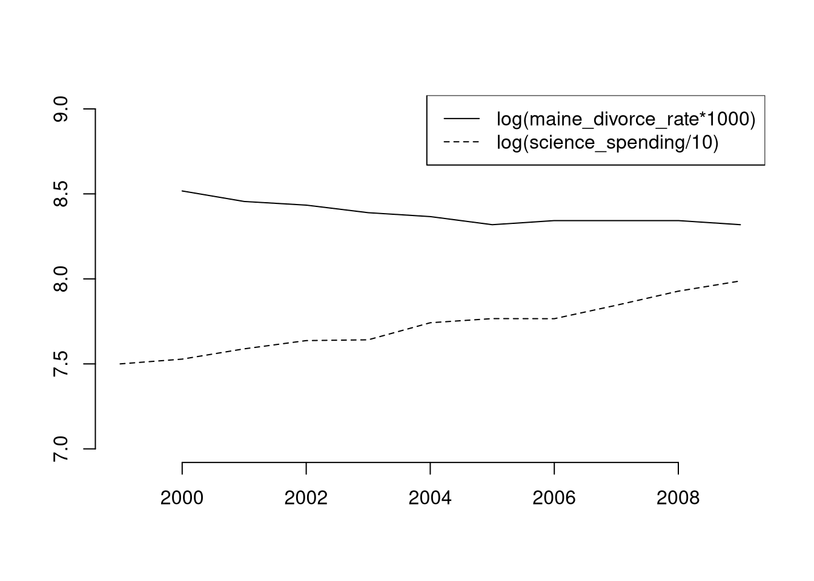
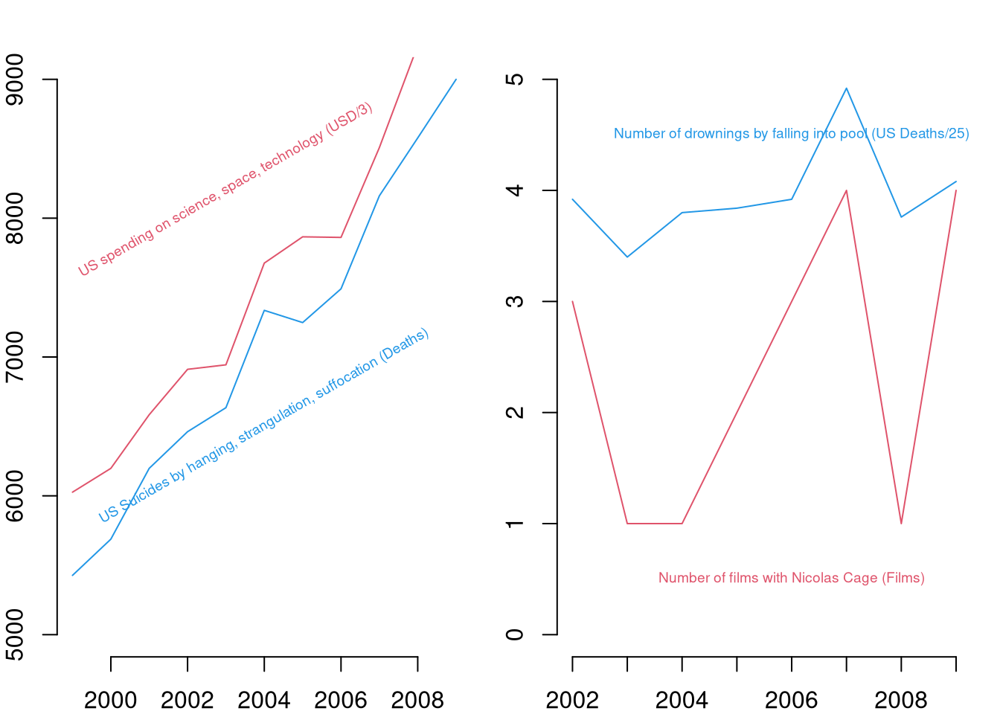

6 Data analysis examples
6.1 US Gov’t Spending on Science
Lets inspect some spurious correlations inside https://tylervigen.com/spurious-correlations
## Your data is not made up in the computer (hopefully!)
## will normally be an address on your PC
vigen_csv <- read.csv( paste0(
'https://raw.githubusercontent.com/the-mad-statter/',
'whysospurious/master/data-raw/tylervigen.csv') )
class(vigen_csv)## [1] "data.frame"names(vigen_csv)## [1] "year" "science_spending"
## [3] "hanging_suicides" "pool_fall_drownings"
## [5] "cage_films" "cheese_percap"
## [7] "bed_deaths" "maine_divorce_rate"
## [9] "margarine_percap" "miss_usa_age"
## [11] "steam_murders" "arcade_revenue"
## [13] "computer_science_doctorates" "noncom_space_launches"
## [15] "sociology_doctorates" "mozzarella_percap"
## [17] "civil_engineering_doctorates" "fishing_drownings"
## [19] "kentucky_marriage_rate" "oil_imports_norway"
## [21] "chicken_percap" "train_collision_deaths"
## [23] "oil_imports_total" "pool_drownings"
## [25] "nuclear_power" "japanese_cars_sold"
## [27] "motor_vehicle_suicides" "spelling_bee_word_length"
## [29] "spider_deaths" "math_doctorates"
## [31] "uranium"vigen_csv[1:5,1:5]## year science_spending hanging_suicides pool_fall_drownings cage_films
## 1 1996 NA NA NA NA
## 2 1997 NA NA NA NA
## 3 1998 NA NA NA NA
## 4 1999 18079 5427 109 2
## 5 2000 18594 5688 102 2## similar `apply' functions
lapply(vigen_csv[,1:5], class) ## like apply, but for lists## $year
## [1] "integer"
##
## $science_spending
## [1] "integer"
##
## $hanging_suicides
## [1] "integer"
##
## $pool_fall_drownings
## [1] "integer"
##
## $cage_films
## [1] "integer"sapply(vigen_csv[,1:5], class) ## lapply, formatted to a vector## year science_spending hanging_suicides pool_fall_drownings
## "integer" "integer" "integer" "integer"
## cage_films
## "integer"The US government spending on science is ruining cinema (p<.001)!
## Drop Data before 1999
vigen_csv <- vigen_csv[vigen_csv$year >= 1999,]
## Run OLS Regression $
reg1 <- lm(cage_films ~ -1 + science_spending,
data=vigen_csv)
summary(reg1)##
## Call:
## lm(formula = cage_films ~ -1 + science_spending, data = vigen_csv)
##
## Residuals:
## Min 1Q Median 3Q Max
## -1.7670 -0.7165 0.1447 0.7890 1.4531
##
## Coefficients:
## Estimate Std. Error t value Pr(>|t|)
## science_spending 9.978e-05 1.350e-05 7.39 2.34e-05 ***
## ---
## Signif. codes: 0 '***' 0.001 '**' 0.01 '*' 0.05 '.' 0.1 ' ' 1
##
## Residual standard error: 1.033 on 10 degrees of freedom
## (1 observation deleted due to missingness)
## Multiple R-squared: 0.8452, Adjusted R-squared: 0.8297
## F-statistic: 54.61 on 1 and 10 DF, p-value: 2.343e-05It’s not all bad, people in maine stay married longer.
plot.new()
plot.window(xlim=c(1999, 2009), ylim=c(7,9))
lines(log(maine_divorce_rate*1000)~year, data=vigen_csv)
lines(log(science_spending/10)~year, data=vigen_csv, lty=2)
axis(1)
axis(2)
legend('topright', lty=c(1,2), legend=c(
'log(maine_divorce_rate*1000)',
'log(science_spending/10)'))
For more intuition on spurious correlations, try http://shiny.calpoly.sh/Corr_Reg_Game/
par(mfrow=c(1,2), mar=c(2,2,2,1))
plot.new()
plot.window(xlim=c(1999, 2009), ylim=c(5,9)*1000)
lines(science_spending/3~year, data=vigen_csv, lty=1, col=2, pch=16)
text(2003, 8200, 'US spending on science, space, technology (USD/3)', col=2, cex=.6, srt=30)
lines(hanging_suicides~year, data=vigen_csv, lty=1, col=4, pch=16)
text(2004, 6500, 'US Suicides by hanging, strangulation, suffocation (Deaths)', col=4, cex=.6, srt=30)
axis(1)
axis(2)
plot.new()
plot.window(xlim=c(2002, 2009), ylim=c(0,5))
lines(cage_films~year, data=vigen_csv[vigen_csv$year>=2002,], lty=1, col=2, pch=16)
text(2006, 0.5, 'Number of films with Nicolas Cage (Films)', col=2, cex=.6, srt=0)
lines(pool_fall_drownings/25~year, data=vigen_csv[vigen_csv$year>=2002,], lty=1, col=4, pch=16)
text(2006, 4.5, 'Number of drownings by falling into pool (US Deaths/25)', col=4, cex=.6, srt=0)
axis(1)
axis(2)
And don’t Forget ``if you torture the data long enough, it will confess.’’
## Include an intercept to regression 1
reg2 <- lm(cage_films ~ science_spending, data=vigen_csv)
library(stargazer)##
## Please cite as:## Hlavac, Marek (2022). stargazer: Well-Formatted Regression and Summary Statistics Tables.## R package version 5.2.3. https://CRAN.R-project.org/package=stargazerstargazer(reg1, reg2, type='text')##
## ============================================================
## Dependent variable:
## ----------------------------------------
## cage_films
## (1) (2)
## ------------------------------------------------------------
## science_spending 0.0001*** 0.0001
## (0.00001) (0.0001)
##
## Constant -0.140
## (2.166)
##
## ------------------------------------------------------------
## Observations 11 11
## R2 0.845 0.124
## Adjusted R2 0.830 0.026
## Residual Std. Error 1.033 (df = 10) 1.089 (df = 9)
## F Statistic 54.609*** (df = 1; 10) 1.271 (df = 1; 9)
## ============================================================
## Note: *p<0.1; **p<0.05; ***p<0.01Nevertheless, data transformation is often necessary before regression analysis. For downloading tips, see https://raw.githubusercontent.com/rstudio/cheatsheets/main/data-import.pdf
6.2 Data processing simulation
Make random datasets
make_noisy_data <- function(n){
x <- seq(1,10, length.out=n)
e <- rnorm(length(x), mean=0, sd=10)
y <- .25*x + e
xy_mat <- data.frame(ID=seq(x),x=x, y=y)
return(xy_mat)
}
dat1 <- make_noisy_data(6)
dat1## ID x y
## 1 1 1.0 -6.1470347
## 2 2 2.8 4.2699058
## 3 3 4.6 29.2882246
## 4 4 6.4 -2.4522214
## 5 5 8.2 -0.6208467
## 6 6 10.0 3.8648116dat2 <- make_noisy_data(6)
## merging data in wide format
dat_merged_wide <- merge(dat1, dat2,
by='ID', suffixes=c('.1','.2'))Data Merging
## merging data in long format and reshaping to wide
dat_merged_long <- rbind( cbind(dat1,DF=1),cbind(dat2,DF=2))
library(reshape2)
dat_melted <- melt(dat_merged_long, id.vars=c('ID', 'DF'))
dat_merged_wide2 <- dcast(dat_melted, ID~DF+variable)
dat_merged_wide == dat_merged_wide2## ID x.1 y.1 x.2 y.2
## [1,] TRUE TRUE TRUE TRUE TRUE
## [2,] TRUE TRUE TRUE TRUE TRUE
## [3,] TRUE TRUE TRUE TRUE TRUE
## [4,] TRUE TRUE TRUE TRUE TRUE
## [5,] TRUE TRUE TRUE TRUE TRUE
## [6,] TRUE TRUE TRUE TRUE TRUE